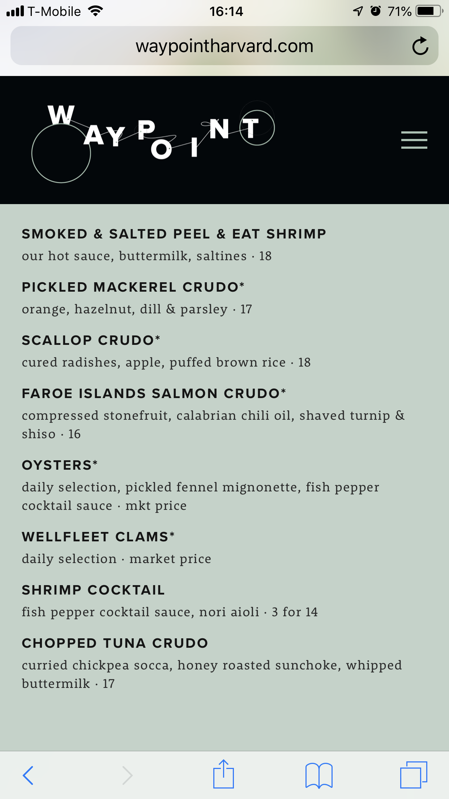

Type Tools - ARTG2251
12Tabs & Voting for PostersDEC 4
Attendance for today (will get taken down after class)
All about tabs and how to use them!
In-class presentation about tabs
Practice assignment for tabs (optional):
While I'm building the form for voting on the final poster, feel free to experiment with tabs with this assignment, or work on something else.
Recreate this table of contents using this text:
Assignment
Vote on your favorite poster (don't vote for yourself). I will show the top posters to Eli at Union Press and based on what is most feasible for him to create, a winner will be chosen and I'll announce it as soon as we know (probably in a day or two). This will be the poster that we'll print when we go to Union Press.
11In Class CritiqueNOV 27
Today we're doing an in class critique of the chosen 3 sketches we have for the posters. We'll split into smaller groups and everyone will show their 3 options and get feedback from the rest of the group. By the time class is over, you should have an idea of which direction to pursue for your final submission.
Assignment
Work on finalizing the one poster option you created based on the feedback from your critique group in class. Remember that your final submission for Project 3 is due next week (Dec 4th)!
10Working Class & Intro to Project 3NOV 13
Introduce Project 3 and then begin working on it. If you have other questions related to InDesign or typography we can cover them now as well.
Assignment
Do your 5 sketches in class, by the next time we meet (November 27th), please have your chosen top 3 designs printed out on tabloid paper for critique.
09Composite Files and Typography for Mobile DesignNOV 6
I hope you voted today if you can! 🇺🇸
Today we'll be covering how to create composite files in InDesign, and going over some questions people had after last week. I'll also be doing a quick demo of how to do some basic things in Figma in case you want to use it for your homework.
Composite Documents Presention from Class
Programs I use in my job (In reference to last week's lesson)
Assignment
Redesign a menu from your favorite restaurant to work for mobile 15pts
Examples:

- Include at least 10 menu items
- Think about the type treatment for various types of information (title of the dish, ingredients, price, etc.)
- You can use any design program to create this. I would recommend using Figma since we just covered it, but if you'd rather practice more in InDesign and use paragraph styles, etc. feel free!
- Please make your document 375px wide (which is a typical size for phone screen designs)
- Export your design as a PDF and upload the one file to dropbox
08Design as a CareerOCT 30
I've gotten lots of questions about my job and what I do. What do I do for work? How do I use typography in my day to day in the field? What is the process like for designing and developing websites and apps?
thoughtbot case study for SplitFit
Programs I use at work:InVision (for linking together and sharing prototypes)
Figma (for designing)
Sublime (my preferred text editor for coding)
Trello (for creating progress lists... or any lists) here's a sample trello board I'm using for tracking progress on my ice cream blog
Middleman (Ruby on Rails static site generator)
Gatsby (ReactJS static site generator)
Sketch (like Figma, but you have to pay for it)
Dribbble (for product design inspiration)
Behance (for general design inspiration)
Assignment
No assignment this week 🎉
07Exporting & HyperlinksOCT 23
Exporting your documents to PDFs and creating both external links and links to content within your document.
Assignment
No assignment this week 🎉
06Class canceledOCT 16
No class tonight.
Assignment
Work on Project #2. Please zip and upload the packaged file using the link below. Due one week from now (10/23) 100pts
Submit File for Project 205Working ClassOCT 9
I'll introduce your second project, and then you'll get to work on it during class. If you need a refresher on how to do something, or have questions from your main Typography I class, I'm here to answer them for you.
Assignment
Work on Project #2. Please zip and upload the packaged file using the link below. Due two weeks from now (10/23) 100pts
Submit File for Project 204Colors & StylesOCT 2
Go over the different modes of color, when they are used, and how to create them and switch between them in InDesign. Go over paragraph styles, character styles, and object effects.
Assignment
No homework this week
03Master PagesSEP 25
How to use master pages in InDesign. We'll take two articles, lay them out, and create a template for them to practice using master pages.
If you're missing class tonight for any reason make sure to let me know. Master pages is an important concept and will be necessary for your Type I class as well as an upcoming assignment in this class. Make sure you're comfortable with them!
About master pages Adobe's guide to master pages
A Quick Guide to Master Pages from InDesign Skills
Assignment
No homework this week
02Page Layouts & Making GridsSEP 18
More on guides, using columns, grids, baseline grids, creating guides, exporting to PDF, going over project 1.
If you don't have a resume, or just want to use this to follow along in class, here's an InDesign file with my resume text in it.
Assignment (Project 1)
Find project 1 details here. Please zip and upload the packaged file using the link below. 100pts
Submit File for Project 101Overview & WorkspaceSEP 11
Introductions, go over the syllabus, creating a document, understanding workspace, setting up basic elements (text, shapes, guides, frames)
Assignment
Please fill out this form. Completion will count as attendance for today.